Bridge thematic analytical symbology and publication-grade print layouts in one seamless workflow. From 2.5D building extrusion and bivariate choropleths to 1-click exhibition posters and automated map book series.
Explore genuine layouts rendered by 02CartoLab using urban planning vector datasets. Click any card to inspect pixel-by-pixel.
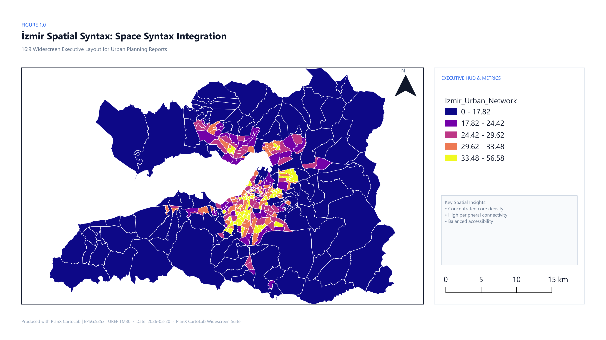
High-impact 16:9 widescreen format designed for executive slides, policy decks, and digital displays with right HUD sidebar.
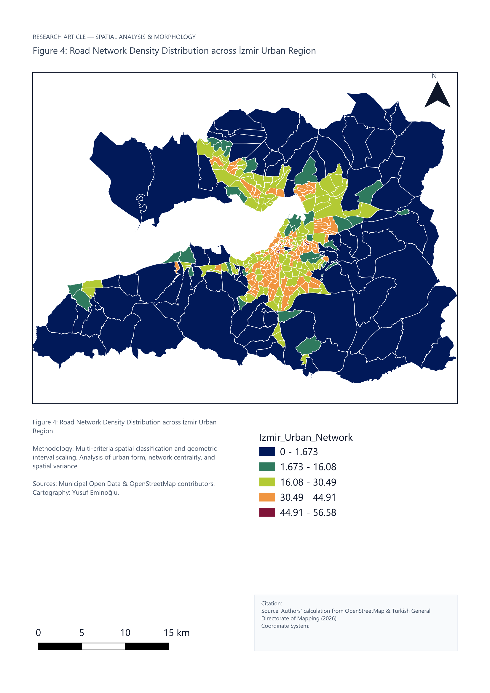
Formal scientific paper layout with figure captions, analytical methodology notes, and academic citation blocks.
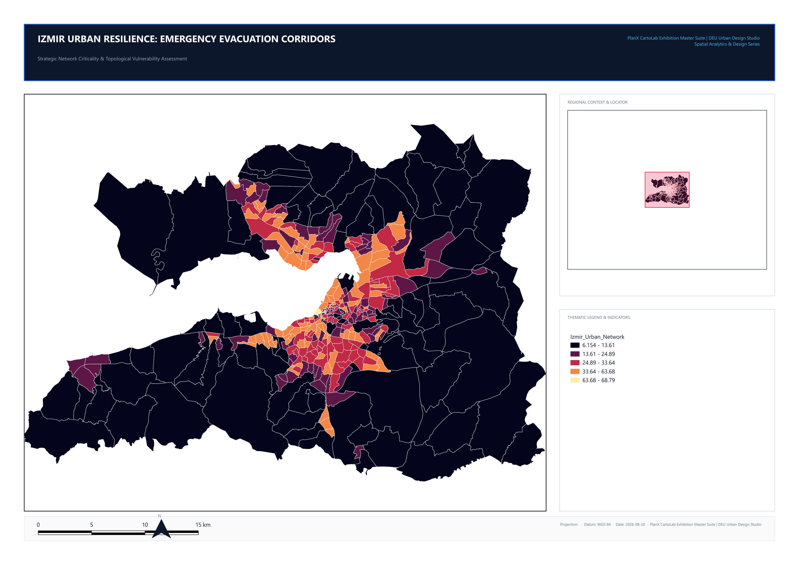
Large-format presentation board featuring bold architectural banner, regional locator map, and dual legend cards.
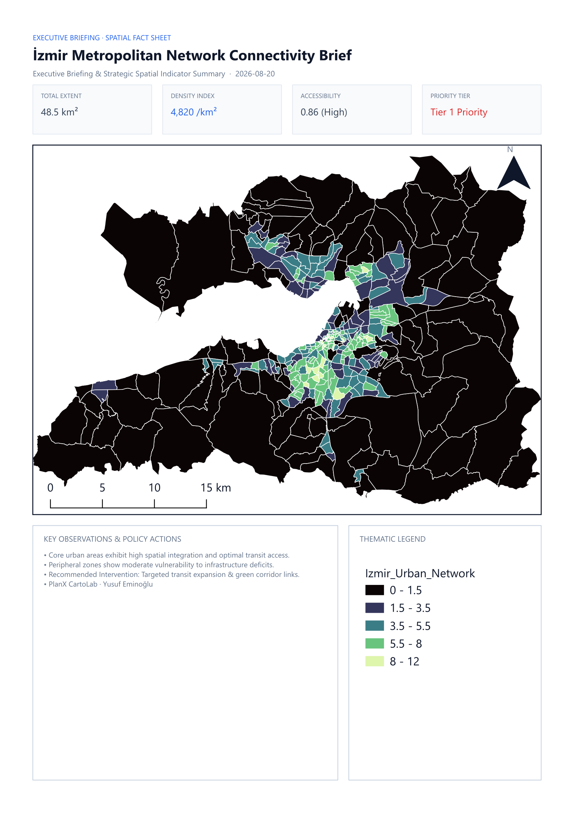
One-page briefing document combining KPI stat cards, central thematic map, and structured policy narrative.
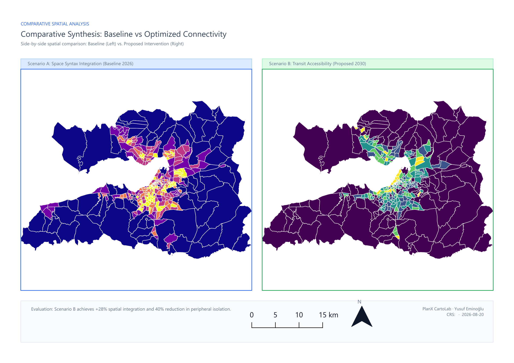
Dual synchronized map canvases for scenario A vs B analysis, temporal change detection, or multi-criteria evaluation.
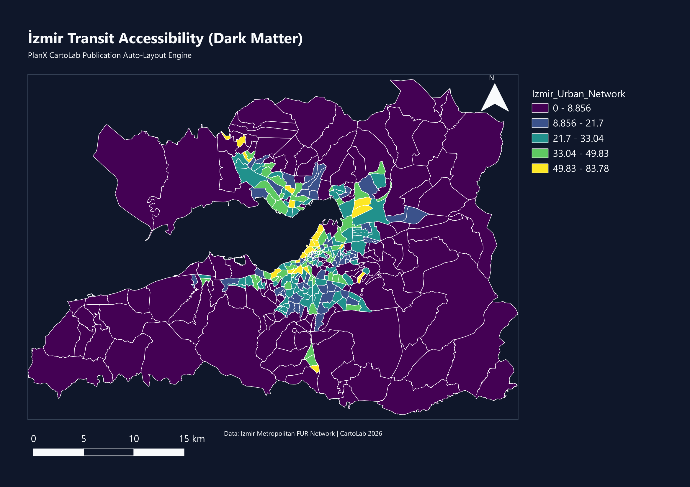
Midnight blue background with luminous neon vectors for command center displays and dark-mode dashboards.
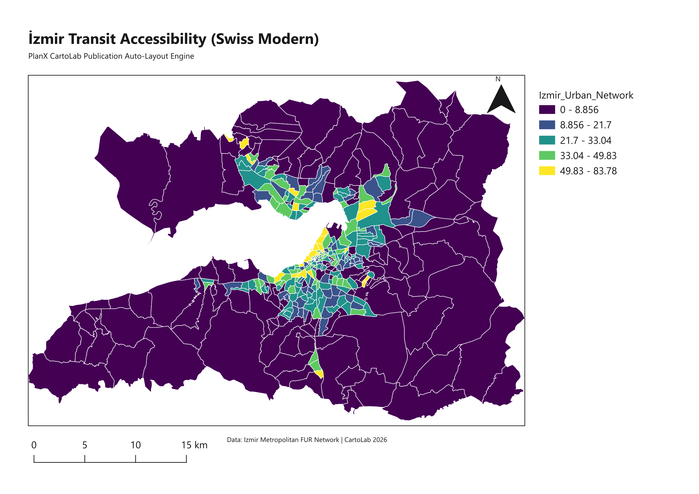
Minimalist white canvas with crisp typography, hairline borders, and international typographic style.
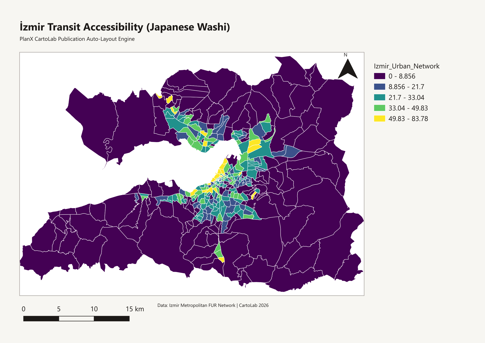
Warm organic paper tone with subtle warm gray borders and harmonious, tranquil map framing.
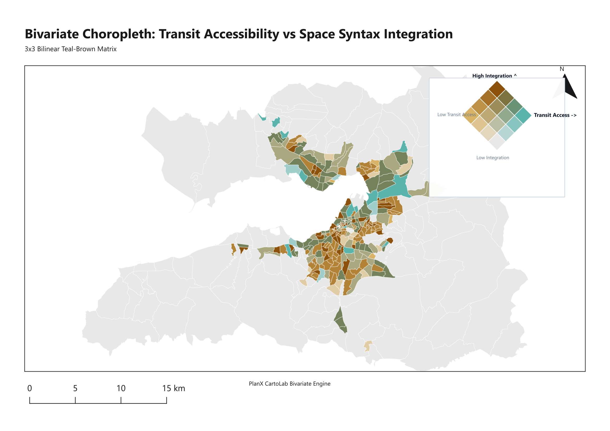
Visualizes two interacting numeric attributes simultaneously using a 2D color matrix with bilinear interpolation.
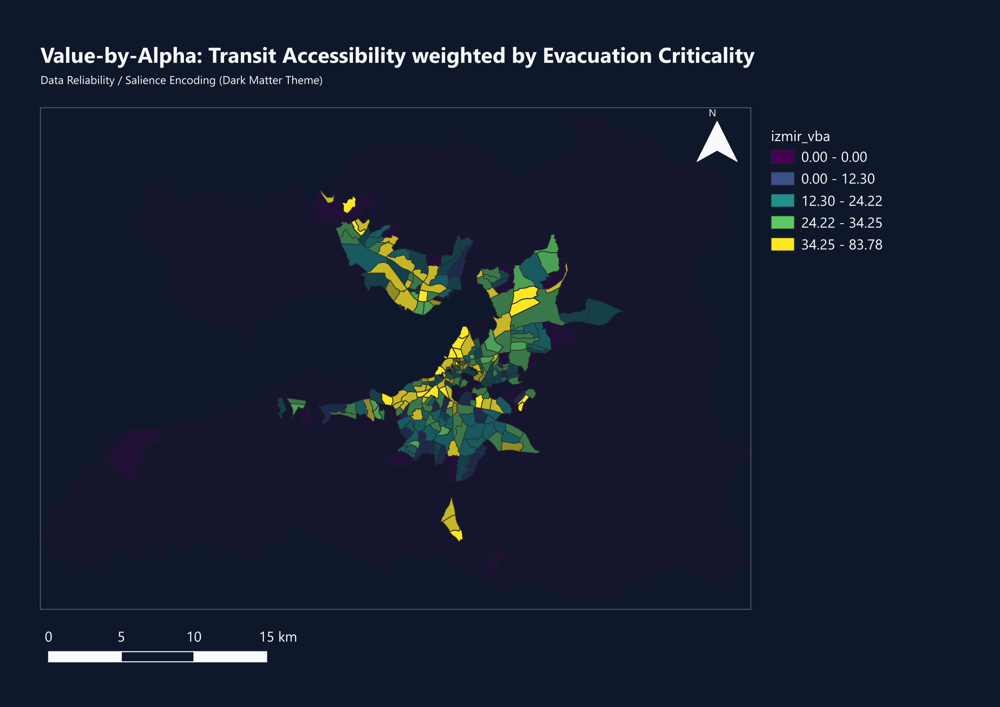
Encodes statistical confidence or density as opacity, ensuring unreliable estimates do not dominate visual attention.
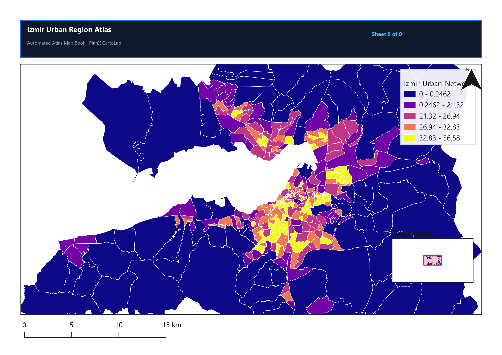
Produces coherent multi-page map books across districts or administrative units with dynamic headers and locator maps.
Test 2D color schemes and evaluate Color Vision Deficiency (CVD) safety with real-time WCAG contrast scoring.
Six specialized studios integrated seamlessly inside QGIS.
Hooks directly into QGIS layout windows with an embedded dock. Features multi-segment Heckbert scalebars, modern north needles, and automated coordinate graticules.
Transforms 2D building footprints into architectural 2.5D massing with solar angle lighting presets, soft drop shadows, and per-floor color bands.
Generates Bivariate Choropleths, Value-by-Alpha maps, Continuous-Area Cartograms, Joyplot Ridge Maps, and Flannery Proportional Symbols.
One-click assembly of executive reports (16:9), academic journal figures (A4), exhibition posters (A2), fact sheets, and comparative diptychs.
Live Color Vision Deficiency (CVD) simulation matrix (Brettel/Machado) and real-time WCAG 2.1 AA/AAA contrast ratio evaluation.
Headless, scriptable, modeler-ready algorithms for automated spatial pipelines, batch processing, and Python scripts.
Accessible from QGIS Processing Toolbox, Graphical Modeler, and Python API.
# Example: Running Quick Style via PyQGIS
import processing
params = {
'INPUT': 'path/to/districts.gpkg|layername=districts',
'FIELD': 'population_density',
'MODE': 1, # 1 = Graduated
'CLASSES': 5,
'METHOD': 0, # 0 = Quantile, 1 = Equal Interval, 2 = Geometric Interval
'PALETTE': 2, # ColorBrewer Blues
'OUTLINE': True
}
result = processing.run('zero2cartolab:quick_style', params)
print(result['SUMMARY'])